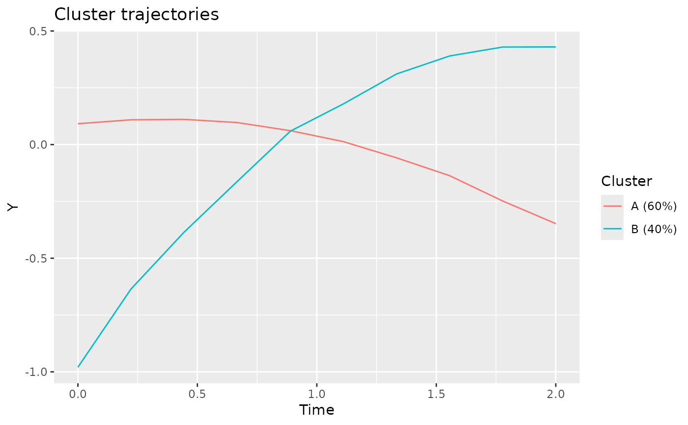

A longitudinal cluster model ([lcModel][lcModel-class]) describes the clustered representation of a certain longitudinal dataset.
A lcModel is obtained by estimating a specified longitudinal cluster method on a longitudinal dataset.
The estimation is done via one of the latrend estimation functions.
A longitudinal cluster result represents the dataset in terms of a partitioning of the trajectories into a number of clusters.
The trajectoryAssignments() function outputs the most likely membership for the respective trajectories.
Each cluster has a longitudinal representation, obtained via clusterTrajectories(), and can be plotted via plotClusterTrajectories().
Clusters and partitioning:
nClusters(): The number of clusters this model represents.
clusterNames(): The names of the clusters.
clusterSizes(): The respective number of trajectories assigned to each cluster.
clusterProportions(): The respective proportional size of each cluster.
trajectoryAssignments(): The most likely cluster membership of each trajectory.
postprob(): The posterior probability of each trajectory to each cluster.
Longitudinal cluster representation (i.e., trends):
clusterTrajectories(): A data.frame containing the longitudinal representation of each cluster.
plotClusterTrajectories(): Plots the longitudinal representation of each cluster.
fittedTrajectories(): A data.frame containing the longitudinal representation of each trajectory. For many methods, this is the cluster center.
plotFittedTrajectories(): Plot the trajectory representation.
Training data:
nIds(): The number of trajectories used for estimation.
ids(): A vector of identifiers of the trajectories that were used for estimation.
nobs(): The number of observations used for estimation, across trajectories.
time(): Moments in time on which observations are present.
trajectories(): The trajectories that were used for estimation.
plotTrajectories(): Plot the trajectories that were used for estimation.
Model evaluation:
summary(): Obtain a summary of the model.
metric(): Compute an internal metric.
externalMetric(): Compute an external metric in relation to a second lcModel.
converged(): Whether the estimation procedure converged.
estimationTime(): Total time that was needed for the fitting steps.
sigma(): Residual error scale.
qqPlot(): QQ plot of the model residuals.
Model prediction:
predictForCluster(): Cluster-specific prediction on new data. Not supported for all methods.
predictPostprob(): Predict posterior probability for new data. Not supported for all methods.
predictAssignments(): Predict cluster membership for new data. Not supported for all methods.
Other functionality:
getLcMethod(): Get the method specification by which this model was estimated.
update(): Retrain a model with altered method arguments.
strip(): Removes non-essential (meta) data and environments from the model to facilitate efficient serialization.
data(latrendData)
# define the method
method <- lcMethodLMKM(Y ~ Time, id = "Id", time = "Time")
# estimate the method, giving the model
model <- latrend(method, data = latrendData)
if (require("ggplot2")) {
plotClusterTrajectories(model)
}
